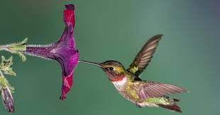

AVES

Los colibrís, también conocidos como picaflor, quindes o “pájaro-mosca”, son aves tropicales que pertenecen a la familia de los troquilidos (Trochilinae).
Los colibríes viven principalmente en las regiones tropicales y subtropicales, pero también en las regiones templadas de América del sur y del norte.
Pese a ser nativas de América Central, se les puede encontrar desde Alaska hasta el centro y norte del continente sudamericano.
Del mismo modo, es posible localizarlas en ciertas regiones subtropicales como Argentina, Uruguay y Chile. El hábitat natural del colibrí no sólo se los
encuentra en las llanuras, ya que suben hasta los 5.000 metros.
CARACTERISTICAS
- Pueden batir sus alas entre 80 a 200 veces por segundo.
- Es considerado el vertebrado más rápido del mundo.
- Sus patas son tan cortas, delgadas y frágiles, que muchos de ellos prácticamente ya han perdido la capacidad de caminar con ellas. Aunque pueden hacerlo.
- Otro rasgo de esta ave tropical es su metabolismo, que es muy elevado.
- El peso de un ejemplar adulto varía entre los 1,5 gramos hasta los 12 gramos.